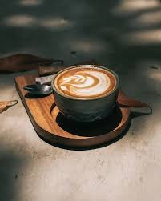
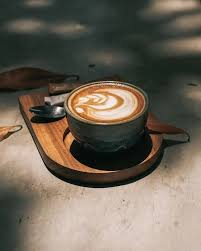

Welcome to Your Neighborhood Coffee Spot
Step inside The Midwestern Coffee Bar, where every cup is crafted with care. From freshly ground espresso to hand-poured pour-overs, we bring the heart of the Midwest to your coffee experience. Whether you're starting your day or taking a well-deserved break, our cozy atmosphere and expertly brewed coffee make every visit special.
Where the warmth of the Midwest meets the perfect cup. Enjoy freshly brewed coffee, locally roasted beans, and a cozy space made for conversation, work, or simply relaxing.
Our Specialty Drinks
- Caramel Maple Latte: Sweet, creamy, and warming—perfect for chilly mornings.
- Midwestern Mocha: Rich chocolate and espresso with a hint of local flavor.
- Nitro Cold Brew: Smooth, bold, and served chilled for a refreshing pick-me-up.
- Seasonal Favorites: Pumpkin spice, peppermint mocha, and more throughout the year.
More Than Just Coffee
Our coffee bar is a place to connect, relax, or focus on your work. With comfortable seating, free Wi-Fi, and friendly staff, we’re proud to create a welcoming space for everyone in the community.